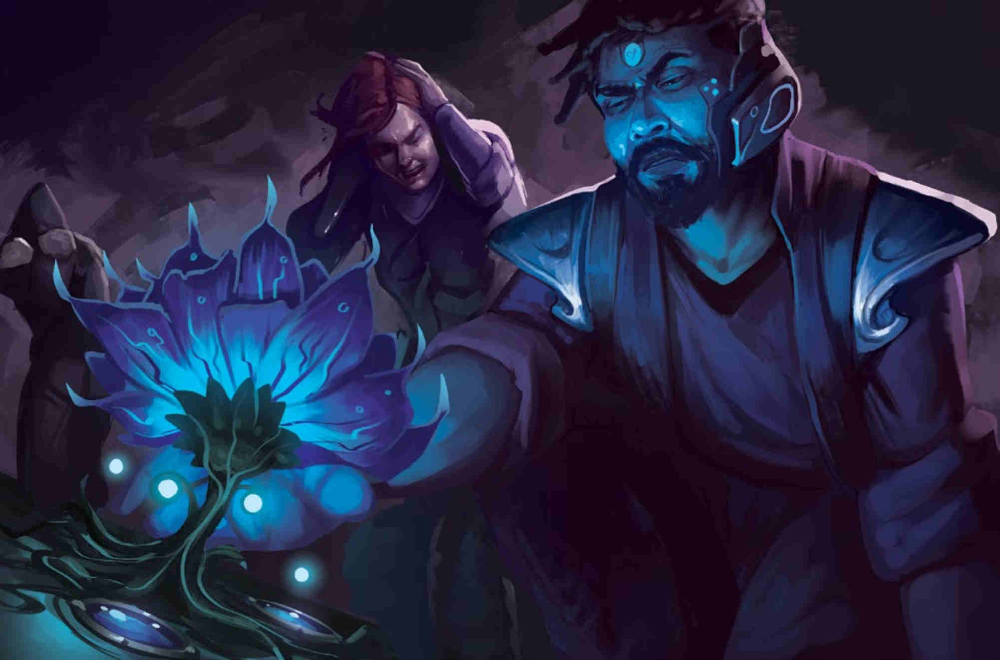

MAIN CONCEPTS
Numenera uses a twenty-sided die (d20) to determine the results of most actions. Whenever a roll of any kind is called for and no die is specified, roll a d20.
The game master (GM) sets a difficulty for any given task. There are 12 degrees of difficulty. Thus, the difficulty of a task can be rated on a scale of 1 to 12.
Each difficulty has a target number associated with it. The target number is always three times the task’s difficulty, so a difficulty 4 task has a target number of 12. To succeed at the task, you must roll the target number or higher.
Character skills, favorable circumstances, or excellent equipment can decrease the difficulty of a task. For example, if a character is trained in climbing, she turns a difficulty 6 climb into a difficulty 5 climb. This is called easing the difficulty by one step (or just easing the difficulty, which assumes it’s eased by one step). If she is specialized in climbing, she turns a difficulty 6 climb into a difficulty 4 climb. This is called easing the difficulty by two steps. Decreasing the difficulty of a task can also be called simply easing a task. Some situations increase, or hinder, the difficulty of a task. If a task is hindered, it increases the difficulty by one step.
A skill is a category of knowledge, ability, or activity relating to a task, such as climbing, geography, or persuasiveness. A character’s level of skill is either trained (reasonably skilled) or specialized (very skilled). If you are trained in a skill relating to a task, you ease the difficulty of that task by one step. If you are specialized, you ease the difficulty by two steps. A skill can never ease a task’s difficulty by more than two steps.
You can also ease the difficulty of a given task by applying Effort (more about Effort on character creation process page)
WHEN DO YOU ROLL?
Any time your character attempts a task, the GM assigns a difficulty to that task, and you roll a d20 against the associated target number. When you jump from a burning vehicle, swing a battleaxe at a mutant beast, swim across a raging river, identify a strange device, convince a merchant to give you a lower price, craft an object, use a power to control a foe’s mind, or use a heat-beam emitter to carve a hole in a wall, you make a d20 roll.
However, if you attempt something that has a difficulty of 0, no roll is needed—you automatically succeed. Many actions have a difficulty of 0. Examples include walking across the room and opening a door, using a special ability to negate gravity so you can fly, using an ability to protect your friend from radiation, or activating a device (that you already understand) to erect a force field. These are all routine actions and don’t require rolls. Using skills, assets, and Effort, you can ease the difficulty of potentially any task to 0 and thus negate the need for a roll. Walking across a narrow wooden beam is tricky for most people, but for an experienced gymnast, it’s routine. You can even ease the difficulty of an attack on a foe to 0 and succeed without rolling.
If there’s no roll, there’s no chance for failure. However, there’s also no chance for remarkable success (in Numenera, that usually means rolling a 19 or 20). More of that below.
SPECIAL ROLLS
When you roll a natural 19 (the d20 shows “19”) and the roll is a success, you also have a minor effect. In combat, a minor effect inflicts 3 additional points of damage with your attack, or, if you’d prefer a special result, you could decide instead that you knock the foe back, distract them, or something similar. When not in combat, a minor effect could mean that you perform the action with particular grace. For example, when jumping down from a ledge, you land smoothly on your feet, or when trying to persuade someone, you convince them that you’re smarter than you really are. In other words, you not only succeed but also go a bit further.
When you roll a natural 20 (the d20 shows “20”) and the roll is a success, you also have a major effect. This is similar to a minor effect, but the results are more remarkable. In combat, a major effect inflicts 4 additional points of damage with your attack, but again, you can choose instead to introduce a dramatic event such as knocking down your foe, stunning them, or taking an extra action. Outside of combat, a major effect means that something beneficial happens based on the circumstance. For example, when climbing up a cliff wall, you make the ascent twice as fast. When a roll grants you a major effect, you can choose to use a minor effect instead if you prefer.
In combat (and only in combat), if you roll a natural 17 or 18 on your attack roll, you add 1 or 2 additional points of damage, respectively. Neither roll has any special effect options— just the extra damage.
Rolling a natural 1 is always bad. It means that the GM introduces a new complication into the encounter.
COMBAT
Making an attack in combat works the same way as any other roll: the GM assigns a difficulty to the task, and you roll a d20 against the associated target number.
The difficulty of your attack roll depends on how powerful your opponent is. Just as tasks have a difficulty from 1 to 12, creatures have a level from 1 to 12. Most of the time, the difficulty of your attack roll is the same as the creature’s level. For example, if you attack a level 2 bandit, it’s a level 2 task, so your target number is 6.
It’s worth noting that players make all die rolls. If a character attacks a creature, the player makes an attack roll. If a creature attacks a character, the player makes a defense roll.
The damage dealt by an attack is not determined by a roll—it’s a flat number based on the weapon or attack used. For example, a spear always does 4 points of damage.
Your Armor characteristic reduces the damage you take from attacks directed at you. You get Armor from wearing physical armor (such as a sturdy leather jerkin or chainmail) or from special abilities. Like weapon damage, Armor is a flat number, not a roll. If you’re attacked, subtract your Armor from the damage you take. For example, a leather jerkin gives you 1 point of Armor, meaning that you take 1 less point of damage from attacks. If a bandit hits you with a knife for 2 points of damage while you’re wearing a leather jerkin, you take only 1 point of damage. If your Armor reduces the damage from an attack to 0, you take no damage from that attack.
When you see the word “Armor” capitalized in the game rules (other than as the name of a special ability), it refers to your Armor characteristic—the number you subtract from incoming damage. When you see the word “armor” with a lowercase “a,” it refers to any physical armor you might wear.
Typical physical weapons come in three categories: light, medium, and heavy.
LIGHT WEAPONS inflict only 2 points of damage, but they ease attack rolls by one step because they are fast and easy to use. Light weapons are punches, kicks, clubs, knives, handaxes, rapiers, and so on. Weapons that are particularly small are light weapons.
MEDIUM WEAPONS inflict 4 points of damage. Medium weapons include swords, battleaxes, maces, crossbows, spears, and so on. Most weapons are medium. Anything that could be used in one hand (even if it’s often used in two hands, such as a quarterstaff or spear) is a medium weapon.
HEAVY WEAPONS inflict 6 points of damage, and you must use two hands to attack with them. Heavy weapons are huge swords, great hammers, massive axes, halberds, heavy crossbows, and so on. Anything that must be used in two hands is a heavy weapon.
RANGE AND SPEED
Distance is simplified into four categories: immediate, short, long, and very long.
IMMEDIATE DISTANCE from a character is within reach or within a few steps. If a character stands in a small room, everything in the room is within immediate distance. At most, immediate distance is 10 feet (3 m).
SHORT DISTANCE is anything greater than immediate distance but less than 50 feet (15 m) or so.
LONG DISTANCE is anything greater than short distance but less than 100 feet (30 m) or so.
VERY LONG DISTANCE is anything greater than long distance but less than 500 feet (150 m) or so. (Beyond that range, distances are always specified— 1,000 feet [300 m], a mile [1.5 km], and so on.)
The idea is that it’s not necessary to measure precise distances. Immediate distance is right there, practically next to the character. Short distance is nearby. Long distance is farther off. Very long distance is really far off.
All weapons and special abilities use these terms for ranges. For example, all melee weapons have immediate range — they are close-combat weapons, and you can use them to attack anyone within immediate distance. A thrown knife (and most other thrown weapons) has short range. A bow has long range. A Nano’s Onslaught ability also has short range.
A character can move an immediate distance as part of another action. In other words, they can take a few steps over to the control panel and activate a switch. They can lunge across a small room to attack a foe. They can open a door and step through.
A character can move a short distance as their entire action for a turn. They can also try to move a long distance as their entire action, but the player might have to roll to see if the character slips, trips, or stumbles as the result of moving so far so quickly.
For example, if the PCs are fighting a group of abhumans, any character can likely attack any abhuman in the general melee—they’re all within immediate range. Exact positions aren’t important. Creatures in a fight are always moving, shifting, and jostling, anyway. However, if one abhuman stayed back to use its crossbow, a character might have to use their entire action to move the short distance required to attack that foe. It doesn’t matter if the abhuman is 20 feet (6 m) or 40 feet (12 m) away—it’s simply considered short distance. It does matter if it’s more than 50 feet (15 m) away because that distance would require a long move.
EXPERIENCE POINTS
Experience points (XP) are rewards given to players when the GM intrudes on the story with a new and unexpected challenge (an event called a GM intrusion). For example, in the middle of combat, the GM might inform the player that they drop their weapon. However, to intrude in this manner, the GM must award the player 2 XP. The rewarded player, in turn, must immediately give one of those XP to another player and justify the gift (perhaps the other player had a good idea, told a funny joke, performed an action that saved a life, and so on).
Alternatively, the player can refuse the GM intrusion. If they do so, they don’t get the 2 XP from the GM, and they must also spend 1 XP that they already have. If the player has no XP to spend, they can’t refuse the intrusion.
Another type of XP is which the GM give players between sessions. They are coming as a reward for recovering interesting artifacts or making discoveries during an adventure. You don’t earn XP for killing foes or overcoming standard challenges in the course of play. Discovery is the soul of Numenera.
More about experience points system.CYPHERS
Cyphers are a type of numenera that have a single minor use. A character can carry cyphers and use them during the game. You can’t bear many cyphers at a time because a large number of these weird items emit radiation or dangerous chemicals that don’t mix well. Gathering cyphers together in one place is extraordinarily unhealthy.
Characters will find new cyphers frequently in the course of play, so players shouldn’t hesitate to use their cypher abilities. Because cyphers are always different, the characters will always have new special powers to try.
Most cyphers are as simple to use as swallowing a pill, flipping a switch on a handheld device, or throwing a bomb. Some are more complex, with multiple buttons, switches, knobs, keypads, touchscreen controls, wires, and so on, and may take longer to understand, but otherwise they are still one-use items.
Go to Character Creation Process Page